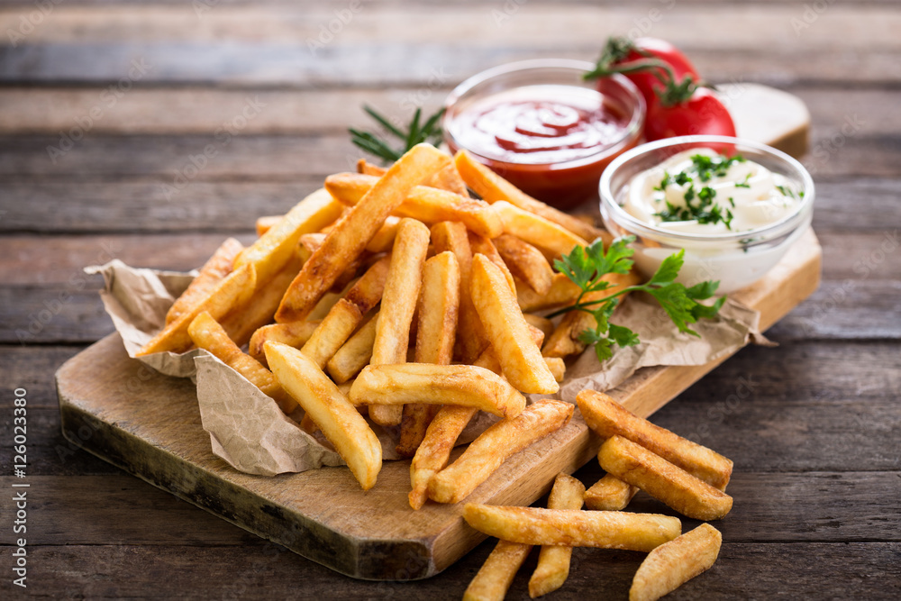

Fries recipe

These aren't just any oven fries, they're covered in an array of tangy and exciting flavours - enjoy a little lift from the herbs and spices then bake until golden and crisp
Ingredients
- 500g oven chips
- Oil
- Paprika
- Rosemary
- Salt
- Garlic Powder
Steps
- Put oven chips on a large baking tray. Drizzle over vegetable oil and sprinkle over smoked paprika, smoked or regular sea sealt flakes, dried rosemary, a small pinch of cayenne pepper and garlic granules; toss well to coat.
- Bake the chips to pack instructions until golden and crisp.